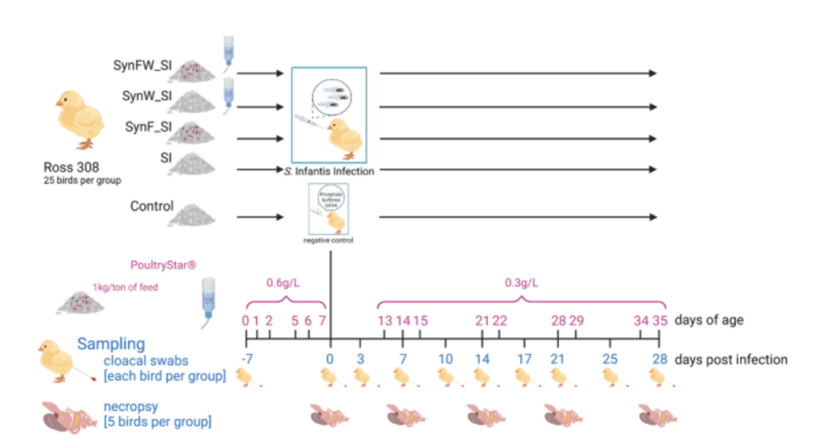

Differential effects of synbiotic delivery route (feed, water, combined) in broilers challenged with Salmonella Infantis
Salmonella Infantis is a persistent, multidrug-resistant threat to poultry production. This study examines how feed, water, and combined synbiotic delivery influence organ colonisation, gut microbiota, and immune function in challenged broiler chickens.
Read on ScienceDirect